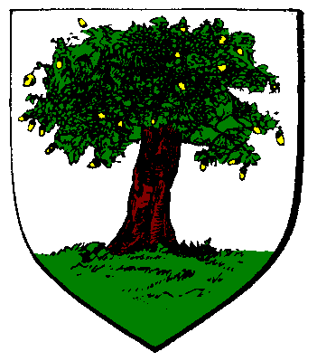

| Übersicht,
Anschläge und Stammtisch (RPG) |
|
Zus.fassung d. Geschehnisse auf Kathodos (5  ) )
|
| Jane van Delving (RIP) |
Sie sind immer noch da.
Jane Doe
Zur 4. Stunde am 42.Blumenmond im Jahre 432 |
18.02.08 20:24
|
|
Dorinda Sculterius
  |
werden die Städte direkt belagert, oder nur das Umland? Sind Reiserouten noch möglich?
Da mir Caligoporta sehr am Herzen liegt und ich gerade auf TiM verweile biete ich für morgen skipperdienste dorthin an für tapfere Kämpfer. Heiler werden natürlich auch gerne als Passagiere gesehen denn ich weiß nicht wiesehr das dortige Gasthaus noch erreichbar ist.
Ich freue mich über Tauben von evtl. Passagieren und auch von Lageberichts-Erstattern auf Caligo. Insbesondere über freie Anleger. GEBT MINOS KEINE CHANCE!
Baronesse Dorinda Sculterius,
Vorsteherin von Gobel en airita Bendur,
Anführerin der glorreichen Nation "Aranarth in Rodyn",
Verlobte des ehrenwerten Soerver
Zur 7. Stunde am 42.Blumenmond im Jahre 432 |
18.02.08 21:07
|
|
| Yverddon (RIP) |
Das Gasthaus von Runandriel Darkness ist von 210 Minotauren, darunter 10 Speerwerfer und 26 Anführern belagert.
Die Anleger im offen zugänglichen Bereich von Caligo sind meines Wissens aktuell beide frei.
Die Stadt Caligoporta ist lediglich von 60 Minotauren, darunter wiederum 10 Speerwerfer und nur vier Anführern besetzt.
Yverddon,
Hohepriester im Dienste des einzig wahren Glaubens an Pheron,
Drachentöter von Caligo
Zur 8. Stunde am 42.Blumenmond im Jahre 432 |
18.02.08 21:24
|
|
| Cadhar (RIP) |
Es werden sowohl die Städte als auch deren Umland belagert...
Sir Cadhar
Zur 8. Stunde am 42.Blumenmond im Jahre 432 |
18.02.08 21:25
|
|
| Solo Kandur (RIP) |
Informationsaustausch Boten pendeln zwischen den Bastionen von Yakkilantos und Alkyoneus hin und her
Solo Kandur,
Kardinal im Dienste des einzig wahren Glaubens an Urvan
Zur 17. Stunde am 42.Blumenmond im Jahre 432 |
18.02.08 23:33
|
|
| Hravna (RIP) |
Ist es möglich, einen dieser Boten abzufangen ? Ich hätte da durchaus ein paar Fragen, an einen solchen...
Hravna,
Bauzeichnerin für Punschi Weihnachtsdorf
Zur 3. Stunde am 43.Blumenmond im Jahre 432 |
19.02.08 1:46
|
|
Elániel Vanyië
  |
Bethana, Lothia, Trucan und Druidenforst sind befreit.
Baronesse Ella von Dahén,
Vorsteherin von Dùn Thuatail,
Priesterin im Dienste des einzig wahren Glaubens an Tura,
Anführerin der glorreichen Nation "Freie Siedler von Thuatail",
Ehefrau des ehrenwerten Zipfelmütz von Dahén
Zur 4. Stunde am 47.Blumenmond im Jahre 432 |
20.02.08 0:31
|
|
Elániel Vanyië
|
So eben wurde von den Wichteln berichtet: Generäle ziehen ihre Truppen nach und nach zurück zu den Bastionen
Baronesse Ella von Dahén,
Vorsteherin von Dùn Thuatail,
Priesterin im Dienste des einzig wahren Glaubens an Wendaria,
Anführerin der glorreichen Nation "Freie Siedler von Thuatail",
Ehefrau des ehrenwerten Zipfelmütz von Dahén
Zur 23. Stunde am 61.Blumenmond im Jahre 432 |
23.02.08 11:21
|
|
| Quentin von Taldrad (RIP) |
Also ich kann bestätigen das beim Palast bei Feste der Weltenwandler eine Menge Mionotauren zusammengezogen worden
Baron Quentin von Taldrad,
Vorsteher von Pax Imperia,
Verlobter der reizenden Tarabea Tarias,
Teilnehmer des Schmiedewettbewerbes
Zur 2. Stunde am 62.Blumenmond im Jahre 432 |
23.02.08 11:57
|
|
| Hufus (RIP) |
Eine Hunder Minotauren auf Arandor Vanenia bei der Festung der Generälin Chariklia. Gruppenstärke einer untersuchten Gruppe: 47
Baron Hufus,
Vorsteher von Dei Septem
Zur 4. Stunde am 62.Blumenmond im Jahre 432 |
23.02.08 12:21
|
|
Elániel Vanyië
|
Skizze der Lage beim Bollwerk auf der Hafeninsel:

Gruppenstärke der Truppen: 25
Baronesse Ella von Dahén,
Vorsteherin von Dùn Thuatail,
Priesterin im Dienste des einzig wahren Glaubens an Wendaria,
Anführerin der glorreichen Nation "Freie Siedler von Thuatail",
Ehefrau des ehrenwerten Zipfelmütz von Dahén
Zur 13. Stunde am 62.Blumenmond im Jahre 432 |
23.02.08 14:35
|
|
| Hufus (RIP) |
So ähnlich sieht es bei Rosaleda auf Arandor_Vanenia auch aus ...
Baron Hufus,
Vorsteher von Dei Septem
Zur 16. Stunde am 62.Blumenmond im Jahre 432 |
23.02.08 15:09
|
|
Alberix, Sohn des Duglim
  |
Ähnlich auch auf Kyll. Haben sich aus dem Gebiet der ehemals belagerten Stadt zurückgezogen und rotten sich um ihre Festung zusammen.
Sir Alberix, Sohn des Duglim,
Vorsteher von Tadmor,
Berserkerzwerg und Werber der Nation
Zur 19. Stunde am 62.Blumenmond im Jahre 432 |
23.02.08 16:00
|
|
| Mithril der Bunte (RIP) |
Auf Kyll ist 1 Gruppe der Minotauren zur Festung Meir´s zurückgekehrt, diese hat allerdings die beachtliche Gruppengröße von 235 Minotauren (darunter 10 Speerwerfer und einige Anführer).
Graf Mithril der Bunte,
Vorsteher von Dîn Ildîrián
Zur 19. Stunde am 62.Blumenmond im Jahre 432 |
23.02.08 16:01
|
|
Lysira Sternenlicht
  |
Auch rund um die Festung des Generals Charmantides auf Kanubia sind mehrere große Gruppen Minotauren zusammengezogen.
Freifrau Lysira Sternenlicht,
Vorsteherin von Amon Amdir,
Kardinälin im Dienste des einzig wahren Glaubens an Pheron,
Legionärin Pherons,
stellv Nationsführerin der Garde des Silberdrachen
Zur 13. Stunde am 63.Blumenmond im Jahre 432 |
23.02.08 20:02
|
|
Dorinda Sculterius
|
na da scheint ja die Minotaurengruppe bei General Alkyoneus bei seiner Bastion auf TiM noch recht possierlich. 2 Minotaurenführer, 9 Minotauren-Speerwerfer und 43 Minotauren ohne Rang und Namen konnte ich heute zählen als ich mich mal auf meinen Handelsreisen kurz vor Ort umschaute. Wirklich bedrohlich wirkten sie in ihrem abgelegenen Waldstück nicht auf mich.
Baronesse Dorinda Sculterius,
Vorsteherin von Gobel en airita Bendur,
Anführerin der glorreichen Nation "Aranarth in Rodyn",
Verlobte des ehrenwerten Soerver
Zur 13. Stunde am 63.Blumenmond im Jahre 432 |
23.02.08 20:09
|
|
Wurzelsepp
 |
Auch auf Long Island sind Minotauren vor der Festung. Unterschiedliche Gruppenzusammensetzung und bisher keine Marschrichtung festzustellen.
Baron Wurzelsepp,
Vorsteher von Tannhausen,
Marschall der Allianz,
Ehemann der reizenden Misha
Zur 16. Stunde am 63.Blumenmond im Jahre 432 |
23.02.08 20:53
|
|
Laurin
  |
Auch die Minotaurentruppen welche in der Nähe von Lothia standen haben sich zum Minotaurenbrückenkopf zwichen Evendim und Dol Guldur zurückgezogen.
Es scheint, als wären die Truppen in Alarmbereitschaft zu sein, denn mehr als 200 Minotauren stürmten auf mich zu, als ich versuchte mir ein Bild der Lage am Minotaurenbrückenkopf zu machen.
Laurin,
Kardinal im Dienste des einzig wahren Glaubens an Urvan,
Kriegsbeildiplomat des Volks von Lothien
Zur 17. Stunde am 63.Blumenmond im Jahre 432 |
23.02.08 21:04
|
|
| Baro Bierbauch (RIP) |
23.02.08 21:21 Alkoholvergiftung General Yakkilantos verliert 20 Minotauren durch den Kartoffelschnaps von Dupsi Rumpnissar
Sir Baro Bierbauch,
Handelsminister
Zur 20. Stunde am 63.Blumenmond im Jahre 432 |
23.02.08 21:40
|
|
Planet-Mors
 |
Ebenso ist es auf Kathodos. Die Minotauren rücken aus. 220 Einheiten konnte ich zählen. Eine 60er, und eine 160er.
Sir Planet-Mors,
Vorsteher von Skotos,
Hohepriester im Dienste des einzig wahren Glaubens an Pheron
Zur 21. Stunde am 63.Blumenmond im Jahre 432 |
23.02.08 21:59
|
|
Klaus Störtebeker
  |
Ob er wohl noch mehr von diesem Teuefelszeug brauen könnte?
Sir Klaus Störtebeker,
Vorsteher von Caer Bannog,
Kapitän des Roten Teufels & Mitglied im Hohen Rat,
Teilnehmer des Schmiedewettbewerbes,
Architekt für Punschi Weihnachtsdorf
Zur 21. Stunde am 63.Blumenmond im Jahre 432 |
23.02.08 22:01
|
|
Elániel Vanyië
|
Eine weitere Meldung der Wichtel:
General Agrios lässt nach den Runen suchen
Baronesse Ella von Dahén,
Vorsteherin von Dùn Thuatail,
Priesterin im Dienste des einzig wahren Glaubens an Wendaria,
Anführerin der glorreichen Nation "Freie Siedler von Thuatail",
Ehefrau des ehrenwerten Zipfelmütz von Dahén
Zur 21. Stunde am 63.Blumenmond im Jahre 432 |
23.02.08 22:03
|
|
Kittin Silberfang
 |
Die Wichtel melden, dass General Yakkilantos 20 Minotauren durch den Kartoffelschnaps von Dupsi Rumpnissar verliert, da dieser vergiftet war.
Baron Kittin Bierbart,
Vorsteher von Waldbrück,
Steinmadenzüchter
Zur 23. Stunde am 63.Blumenmond im Jahre 432 |
23.02.08 22:22
|
|
| Hravna (RIP) |
... oder die Minotauren vertragen keine alkoholischen Getränke...
Für einen Zwerg schwer vorstellbar, ich weiß *grinst zu Kittin*
Hravna,
Bauzeichnerin für Punschi Weihnachtsdorf
Zur 24. Stunde am 63.Blumenmond im Jahre 432 |
23.02.08 22:36
|
|
Sambi
  |
*hustet und wiederholt die Worte* da dieser vergiftet war*schaut Hravna an* a lesen b zuhören wer beides kann und den sin versteht. dem ist schon geholfen.*grinst und zwinkert ihr zu*
Sambi,
Kardinal im Dienste des einzig wahren Glaubens an Pheron,
Verlobter der reizenden Naddel,
Legionär Pherons
Zur 24. Stunde am 63.Blumenmond im Jahre 432 |
23.02.08 22:39
|
|
| Marduc (RIP) |
Viel interessanter finde ich den Namen Kartoffel. Was ist das für ein Zeug? Irgendetwas flüssiges? oder eher eine Frucht die an Sträuchern wächst?
Wenn jemand einen Kartoffelbaum entdeckt hat, würde mich das sehr interessieren.
Markgraf Marduc,
Vorsteher von Ganath Nova,
Anführer der glorreichen Nation "Der Pfad der letzten Sünde",
Superminister für alle Angelegenheiten,
Verlobter der reizenden Gabria von Corin
Zur 6. Stunde am 64.Blumenmond im Jahre 432 |
24.02.08 0:04
|
|
| Ahab der Graue (RIP) |
Das ist bestimmt etwas beerenartiges, das an einem Strauch wächst. Beeren sind doch öfters giftig. Und meistens haben die giftigen eine rötliche Farbe. Sucht nach einem Kartoffelstrauch mit rötlichen Früchten! Vielleicht kann man daraus einen - für Kühe giftigen - Kartoffelwein brauen!
Ahab der Graue
Zur 17. Stunde am 64.Blumenmond im Jahre 432 |
24.02.08 2:34
|
|
| Yvaine (RIP) |
Werter Sambi,
dennoch könnte es sein, das sie keinen Alkohol vertragen,
vielleicht war das Gift in dem Schnaps nur nebensache, die nebenher erwähnt wurde.
Wobei, wisst Ihr mehr als andere, über die Minotauren ? *legt den kopf leicht schief*
Ihr gebt zu allem eine Antwort, und meint es besser wissen zu wollen.
Vielleicht Sympatisiert ihr ja sogar mit den Minotauren? *legt den kopf zur anderen seite*
Ich weiss es jedenfalls nicht, und wenn Ihr euch nun durch meine Worte angegriffen fühlt, so tut es mir leid *lächelt*
Doch Ihr zollt einer Dame wie Hravna nicht den gebührenden Respekt der Ihr gebührt.
Ich kann mich noch an Zeiten erinnern, wo Ihr ganz kleinlaut umhergeschriehen habt, das Ihr eurer Zugehörigkeit entsagt hattet, und Ihr um Frieden batet.
Aber genug der strafenden Worte,
hier geht es schließlich nicht um Euch, sondern um die Minotauren und ihr Tatwerk!
*lächelt Sambi wieder freundlich an und zieht wieder von dannen*
Baronesse Yasira Mithrida,
Vorsteherin von Bel en Orod
Zur 19. Stunde am 64.Blumenmond im Jahre 432 |
24.02.08 3:10
|
|
Frathag Graubart
  |
Wenn wir diese giftigen Beeren finden und einen Sud daraus brauen, können wir vielleicht das Fell der Karawanenkamele damit einreiben, damit sich die Drachen selbst vergiften wenn sie die fressen?
Aber dass Alkohol, gleich welcher Art sowohl bei falscher Destillation als auch grundsätzlich in zu großen Mengen giftig ist und zum Tode führt, sollte selbst auf der zivilisatorisch zurückgebliebenen Scherbe einem jeden bekannt sein!
Frathag Graubart
Zur 16. Stunde am 65.Blumenmond im Jahre 432 |
24.02.08 8:04
|
|
| Baro Bierbauch (RIP) |
Warum reden alle von Gift? ((Kittin, musst dich wohl verlesen haben)) Mir Berichteten die Wichtel eine Alkoholvergiftung, kein Gift im Alkohol! Ich denke, dass die Minos einfach zu wenig vertragen,... Sind halt keine Zwerge.
Nach befragen eines Heilers bezuecihnet man Alkoholvergiftung mit:
Vergiftung durch übermäßigem Genuss von Alkohol oder Genuss von falsch destilliertem Alkohol.
Sir Baro Bierbauch,
Handelsminister
Zur 17. Stunde am 65.Blumenmond im Jahre 432 |
24.02.08 8:22
|
|
| Ignaz Igor (RIP) |
Weis jemand wo der sich aufhält Dupsi Rumpnissar
????
Freiherr Ignaz Igor,
Vorsteher von Tuborg
Zur 18. Stunde am 65.Blumenmond im Jahre 432 |
24.02.08 8:32
|
|
| Marduc (RIP) |
Finden wir den Strauch roter Katoffelfrüchte, finden wir sicher auch Dupsi Rumpnissar ganz in deren nähe.
Markgraf Marduc,
Vorsteher von Ganath Nova,
Anführer der glorreichen Nation "Der Pfad der letzten Sünde",
Superminister für alle Angelegenheiten,
Verlobter der reizenden Gabria von Corin
Zur 6. Stunde am 66.Blumenmond im Jahre 432 |
24.02.08 11:14
|
|
Kittin Silberfang
|
*schaut auf sein Bier*
...ich denke, dass Alkohol auch bei Zwergen ein bisschen wirkt...
*schaut zu seinem Wichtel* Und DU - du informierst mich das nächste mal genauer! So was peinliches! Pah! Kakao- und Baumkletterverbot für dich heute!
*wild auf seinen Wichtelmagier einredend weiter geht*
Baron Kittin Bierbart,
Vorsteher von Waldbrück,
Steinmadenzüchter
Zur 7. Stunde am 66.Blumenmond im Jahre 432 |
24.02.08 11:25
|
|
| Ahab der Graue (RIP) |
Vielleicht wirkt ja auch ein Aufguß aus diesen Früchten? Ein Kartoffeltee?
Ahab der Graue
Zur 18. Stunde am 66.Blumenmond im Jahre 432 |
24.02.08 14:02
|
|
| Georgina von Dragon (RIP) |
Weiß man denn wie dieser Strauch ausschaut?
Freifrau Tarabea Tarias,
Vorsteherin von Castelo de Már,
Stern von Cair
Zur 21. Stunde am 66.Blumenmond im Jahre 432 |
24.02.08 14:45
|
|
| Baro Bierbauch (RIP) |
Ich denke, er wird anders aussehen als alles andere was wir kennen, also anders als Kakao oder Tabak. Wenn es um Alkohol geht... Ich hab noch ein Kräuterlikör im Angebot...
Sir Baro Bierbauch,
Handelsminister
Zur 16. Stunde am 67.Blumenmond im Jahre 432 |
24.02.08 19:16
|
|
| Cadhar (RIP) |
26.02.08 20:14 Waldsterben Auf Kathodos verdörren große Waldgebiete und Tabakplantagen
Sir Cadhar,
Vorsteher von Larjas Träne
Zur 10. Stunde am 76.Blumenmond im Jahre 432 |
26.02.08 20:16
|
|
| DarthMordor (RIP) |
25.02.08 11:59 Entführung Quentin von Taldrad entdeckt Entführung von Lucky Lois und wird zeitweilig ausgeschaltet
Baron DarthMordor,
Vorsteher von Lapis Lothianis,
indoktrinierender Agitator,
Verlobter der reizenden Lucky Lois
Zur 12. Stunde am 76.Blumenmond im Jahre 432 |
26.02.08 20:42
|
|
| Parrakus (RIP) |
Soeben berichteten die Wichtel von einem Waldsterben: Auf Kathodos verdörren große Waldgebiete und Tabakplantagen
Weiß jemand wie schwerwiegend dieses ist?
Parrakus,
Schmied der Nation
Zur 14. Stunde am 76.Blumenmond im Jahre 432 |
26.02.08 21:14
|
|
| Marduc (RIP) |
Mein Kartograph konnte auf Kathodos folgende Skizze anfertigen.

Markgraf Marduc,
Vorsteher von Ganath Nova,
Anführer der glorreichen Nation "Der Pfad der letzten Sünde",
Superminister für alle Angelegenheiten,
Verlobter der reizenden Gabria von Corin
Zur 19. Stunde am 76.Blumenmond im Jahre 432 |
26.02.08 22:22
|
|
miko
 |
da gabs wohl bohneneintopf für die minotauren :(
aber wer zum geier sollte lois entführen, und warum?
miko
Zur 24. Stunde am 76.Blumenmond im Jahre 432 |
26.02.08 23:27
|
|
| Marduc (RIP) |
19.06.2008 19:00 Belagerung Die Bewohner der Hafeninsel richten das Katapult neu aus
Markgraf Marduc,
Vorsteher von Ganath Nova,
Anführer der glorreichen Nation "Der Pfad der letzten Sünde",
Superminister für alle Angelegenheiten,
Verlobter der reizenden Gabria von Corin
Zur 5. Stunde am 16.Dunkelfrost im Jahre 433 |
19.06.08 19:09
|
|
| Alice (RIP) |
19.06.2008 19:05 Belagerung Die Bewohner der Hafeninsel feuern das Katapult ab und verletzen die Palastwache schwer
Alice,
Kardinälin im Dienste des einzig wahren Glaubens an Pheron
Zur 6. Stunde am 16.Dunkelfrost im Jahre 433 |
19.06.08 19:17
|
|
Elániel Vanyië
|
Die letzten Spuren General Kalypots gehören der Vergangenheit an.
Mein Dank geht an den Baumeister von Dùn Thuatail und die zahlreichen Arbeiter, die es ermöglicht haben, das Kataplut derart umzubauen, um mit dieser gewaltigen Wucht sowohl den Palast zu zerstören, als auch die noch vor Ort befindlichen Palastwachen stark zu verletzen.
Die Truppenverbände der Freien Siedler von Thuatail und die anwesenden Krieger und Magier der Hafeninsel und unser königlicher Gast gingen aus dieser kurz andauernden Schlacht als Sieger hervor.
Für die Freiheit! Für die Hafeninsel!
Baronesse Ella von Dahén,
Vorsteherin von Dùn Thuatail,
Kardinälin im Dienste des einzig wahren Glaubens an Wendaria,
Anführerin der glorreichen Nation "Freie Siedler von Thuatail",
Ehefrau des ehrenwerten Zipfelmütz von Dahén
Zur 17. Stunde am 16.Dunkelfrost im Jahre 433 |
19.06.08 21:46
|
|
Dorinda Sculterius
|
Eine heroische Tat im Dienste der Scherbe!
Mögen andere euch dies nachmachen um das Gesocks der Minotaurengeneräle nachhaltig von den Scherbeninseln zu verbannen!
Für die Freiheit der Scherbe! Gegen jede Unterdrückung!
Baronesse Dorinda Sculterius,
Vorsteherin von Rosaleda,
Anführerin der glorreichen Nation "Aranarth in Rodyn",
Verlobte des ehrenwerten Soerver
Zur 19. Stunde am 24.Dunkelfrost im Jahre 433 |
21.06.08 19:11
|
|
| Glorfindel von Gondolin (RIP) |
Wsst ihr, wieviele gute Albiontarer Jungs und Mädels ich den Riesen vorwerfen müsste Baroness, und das nur, um sie ein wenig anzukratzen??
Ich glaube nicht, dass es das wert ist, noch dazu, wo diese Truppen stur auf den Palästen stehen und ausser hübsch auszusehen nichts tun.
Ich habe leider kein riesiges Katapult an der Hand, um das zu erledigen.
Herzog Glorfindel von Gondolin,
Vorsteher von Albiontar
Zur 1. Stunde am 26.Dunkelfrost im Jahre 433 |
22.06.08 2:00
|
|
| Amin Godas (RIP) |
und dann erst die geschundenen arbeiter, um die sache zu erledigen. bestimmt wurden sie nicht einmal vergütet...
Sir Amin Godas,
Vorsteher von Endusia ad Argos,
Verlobter der reizenden Queena
Zur 7. Stunde am 27.Dunkelfrost im Jahre 433 |
22.06.08 9:08
|
|
Übersicht,
Anschläge und Stammtisch (RPG)
|